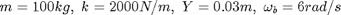
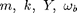
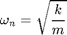
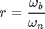
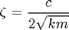
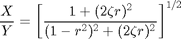
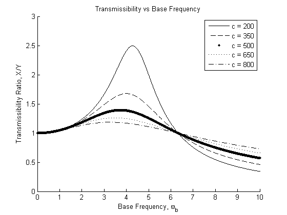
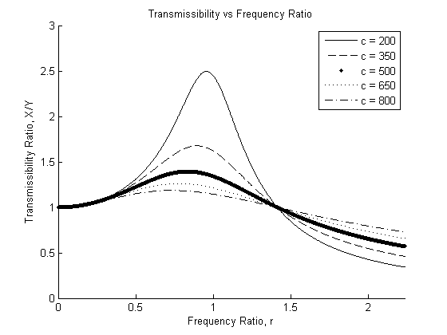

Contents
% Joel Lubinitsky % MAE 321 - HW 8.2 % 03/18/15 clear all close all clc
Problem 2:
For the example we did in class on 4 March, use Matlab to plot the transmissibility ratio for a range of damping coefficients. Use at least 5 values of , and they should mostly span the range for underdamped responses. Include figures both for the transmissibility plotted as a function of the base excitation frequency, and as a function of the frequency ratio. (reminder: )
Known

mass = 100; % kg stiffness = 2000; % N/m amplitudeBase = 0.03; % m num = 1000; frequencyBase = linspace(0, 10, num); % rad/s
Calculations




frequencyNatural = sqrt(stiffness / mass); ratioFrequency = frequencyBase ./ frequencyNatural; ratioDamping = @(c) c / (2 * sqrt(stiffness * mass)); ratioTrans = @(c) sqrt((1 + (2 .* ratioDamping(c) .* ratioFrequency) .^ 2) ./... ((1 - ratioFrequency .^ 2) .^ 2 ... + (2 .* ratioDamping(c) .* ratioFrequency) .^ 2)); coefficientDamping = linspace(200, 800, 5); transmissibility = zeros(num, 5); for n = [1 : 5] transmissibility(:, n) = ratioTrans(coefficientDamping(n)); end
Plots
figure(1) hold on xlabel('Base Frequency, \omega_b') ylabel('Transmissibility Ratio, X/Y') title('Transmissibility vs Base Frequency') axis([0 frequencyBase(end) 0 3]) plot(frequencyBase, transmissibility(:, 1), '-', 'color', [0 0 0]) plot(frequencyBase, transmissibility(:, 2), '--', 'color', [0 0 0]) plot(frequencyBase, transmissibility(:, 3), '.', 'color', [0 0 0]) plot(frequencyBase, transmissibility(:, 4), ':', 'color', [0 0 0]) plot(frequencyBase, transmissibility(:, 5), '-.', 'color', [0 0 0]) legend('c = 200', 'c = 350', 'c = 500', 'c = 650', 'c = 800') figure(2) hold on xlabel('Frequency Ratio, r') ylabel('Transmissibility Ratio, X/Y') title('Transmissibility vs Frequency Ratio') axis([0 ratioFrequency(end) 0 3]) plot(ratioFrequency, transmissibility(:, 1), '-', 'color', [0 0 0]) plot(ratioFrequency, transmissibility(:, 2), '--', 'color', [0 0 0]) plot(ratioFrequency, transmissibility(:, 3), '.', 'color', [0 0 0]) plot(ratioFrequency, transmissibility(:, 4), ':', 'color', [0 0 0]) plot(ratioFrequency, transmissibility(:, 5), '-.', 'color', [0 0 0]) legend('c = 200', 'c = 350', 'c = 500', 'c = 650', 'c = 800') 